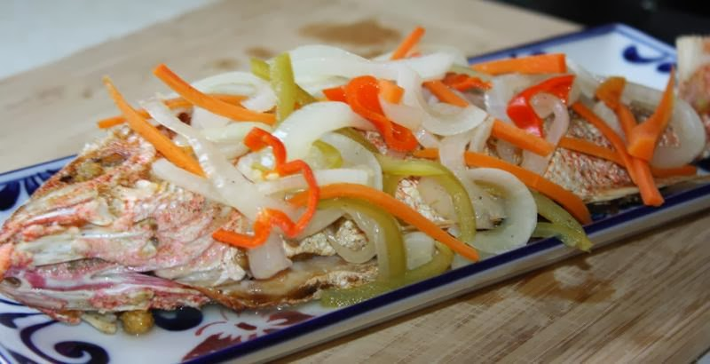

Jamaican Escovitch Fish

Image Source
The constituents of a Jamaican escovitch fish dish are fish
- red snappper or king fish - sliced, spiced, and fried
until golden and crispy, then topped with a spicy, pickled,
vegetable medley of onions, carrots, and scotch bonnet peppers.
Ingredients
Fish and seasoning ingredients
Generally, the type of fish used isn't of importance. However, there
tends to be preferences for colour-appealing red snapper or
the little-boned king fish in some quarters for various reasons.
- Fresh snapper fish or king fish or any fish of your choice
- Salt
- Black pepper
- Scotch bonnet pepper
- Lemon
- Cooking oil - preferably one with a high smoke point and
neutral flavour.
Escovitch dressing
- Onions
- An assortment of bell peppers
- Scotch bonner peppers
- Whole pimento seeds otherwise known as allspice
- White distilled vinegar
- Granulated white sugar
- Salt
- Oil
Steps
Prepping, seasoning, and frying of fish
- Scale, clean, then pat dry your fish with a paper towel.
- Make two or three slits on both sides of the fish and
season well with salt and black pepper. Rub the entire fish,
including the slits and cavities throughtly with the seasonings
and let marinatefor an hour.
- Heat your oil to near smoke point, then place your pimento
seeds, scotch bonnet, and chopped garlic before frying the
fish once the garlic starts to brown. Fry on both sides until
golden and crispy. Note that you
should turn down the heat while frying the fish so that
it does not brown before it has properly cooked.
Prepping and cooking the escovitch dressing
- Slice the bell peppers and carrots thinly and chop the onions
into ring slices. Also slice the scotch bonnet - you may remove
the seeds if you do not like overly spicy.
- Now, saute the bell pepper, carrots, onions, allspice, and
scotch bonnet pepper in the very pan in which you fried the
fish for a couple of minutes. Next, add the vinegar, sugar,
and a pinch of salt and let cook for about 3-4 mins on medium
heat.
- Pour the escovitch dressing over the fish and let sit for a day.
or ovenight, by which time the fish would have absorbed the
flavour from the pickled sauce.
- Your Jamaican Escovitch Fish is ready. Now, you can serve with
bammy, festival dumplings, hard-dough bread, or any side else
you fancy.
Home